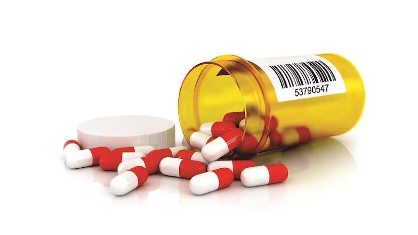
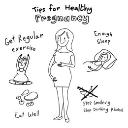

High-Risk Pregnancy- Age 31-40:
Pregnancy after age 40 is considered high-risk due to declining fertility and increased complications.
Higher chances of miscarriage, chromosomal abnormalities, and pregnancy-related complications are associated with advanced maternal age.
Assisted reproductive technologies like IVF may be necessary for conception, requiring close monitoring by healthcare professionals.
Despite challenges, many women in their 40s and 50s successfully deliver healthy babies with proper medical care.
Schedule prompt prenatal appointments and discuss pregnancy plans with partners and healthcare providers.
Prioritize self-care, including healthy lifestyle choices and stress management techniques.
It's a time to weigh the risks and benefits of pregnancy, explore alternative family-building options, and prioritize overall health.
Nutrition
During pregnancy, it's important to maintain a well-balanced diet to ensure both the mother and baby receive adequate nutrition.
While there are certain foods that are generally recommended throughout pregnancy, specific dietary needs may vary slightly during each trimester. Here's a general guideline for foods to consider during each trimester:
Access available resources and support networks tailored to high-risk pregnancies for guidance and assistance.
 Continue to focus on nutrient-rich foods to support the baby's growth and development.
Increase intake of protein-rich foods (such as lean meats, poultry, fish, eggs, legumes) to support tissue growth.
Include omega-3 fatty acids from sources like fatty fish (such as salmon, mackerel, sardines), flaxseeds, chia seeds, and walnuts for brain and eye development.
Consume foods high in vitamin D (such as fortified dairy products, fatty fish, fortified plant-based milk) to support bone health.
Incorporate sources of vitamin C (such as citrus fruits, strawberries, bell peppers) to enhance iron absorption.
Maintain regular intake of folate-rich foods to support continued fetal development.
Continue to focus on nutrient-rich foods to support the baby's growth and development.
Increase intake of protein-rich foods (such as lean meats, poultry, fish, eggs, legumes) to support tissue growth.
Include omega-3 fatty acids from sources like fatty fish (such as salmon, mackerel, sardines), flaxseeds, chia seeds, and walnuts for brain and eye development.
Consume foods high in vitamin D (such as fortified dairy products, fatty fish, fortified plant-based milk) to support bone health.
Incorporate sources of vitamin C (such as citrus fruits, strawberries, bell peppers) to enhance iron absorption.
Maintain regular intake of folate-rich foods to support continued fetal development.
Exercise
Exercise plays a vital role in maintaining physical and mental well-being during pregnancy. Incorporating short, effective exercises into your routine can help alleviate common pregnancy discomforts, such as back pain and fatigue, while also improving circulation, strength, and flexibility. From gentle stretches to low-impact cardio, these exercises are designed to support your changing body and prepare you for the demands of childbirth.
Discover the power of movement and embrace the benefits of staying active throughout your pregnancy journey.
Focus on maintaining regular physical activity if you were active before pregnancy.
Recommended exercises include walking, swimming, prenatal yoga, and light strength training.
Avoid exercises that involve lying flat on your back after the first trimester.
Listen to your body and avoid overexertion. If you experience nausea or fatigue, take breaks as needed.
Incorporate a variety of exercises to promote cardiovascular health, strength, and flexibility.
Engage in activities such as brisk walking, swimming, strength training, and prenatal Pilates or yoga.
Listen to your body and adjust exercise intensity as needed. Stay hydrated and avoid overheating.
Medication Safety
Medication during pregnancy requires careful consideration to ensure the safety of both mother and baby. It's crucial to consult healthcare providers before taking any medication,
including over-the-counter drugs and supplements.Open communication with healthcare professionals helps ensure the healthiest outcomes for both mother and baby.

This period is crucial for fetal development, and certain medications can pose risks to the developing baby.
Generally, it's advisable to avoid unnecessary medications during the first trimester, especially if they're
not essential for maternal health.
If medication is necessary, consult with a healthcare provider to ensure it's safe for pregnancy.
Women in their 20s should carefully consider medication use during pregnancy, especially during the first trimester when the baby's organs are developing.
Consult with a healthcare provider to assess the safety of any medications, including prescription drugs, over-the-counter medications, and supplements.
Tips and Advice
Tips and advice are crucial during pregnancy, contributing significantly to a safe and happy journey for both mother and baby.
From maintaining a nutritious diet to practicing self-care and seeking regular medical check-ups, these recommendations ensure a smooth and healthy pregnancy experience.
By following these tips, expectant mothers can optimize their well-being and nurture a strong foundation for their baby's development.

Focus on taking prenatal vitamins containing folic acid to support fetal development.
Stay hydrated and eat a balanced diet rich in fruits, vegetables, lean proteins, and whole grains.
Avoid alcohol, smoking, and illicit drugs, as they can harm the developing baby.
Discuss any concerns or questions with a healthcare provider and attend prenatal appointments regularly.
Women in their 20s should focus on establishing healthy habits and routines during pregnancy, including regular prenatal care and healthy lifestyle choices.
Don'ts
Pregnancy brings unknown challenges, but with informed decisions and essential tips, it can be navigated safely. By avoiding potential hazards and adopting
healthy habits, expectant mothers can ensure a smoother, more enjoyable pregnancy for themselves and their babies
 Avoid alcohol, smoking, and illicit drugs, as they can harm the developing baby and increase the risk of birth defects.
Limit caffeine intake to 200 milligrams per day to reduce the risk of miscarriage and low birth weight.
Avoid certain foods that may pose a risk of foodborne illness, such as unpasteurized dairy products, raw or undercooked meats, fish high in mercury, and deli meats.
Consult with a healthcare provider before taking any medications, including over-the-counter drugs and supplements, to ensure they're safe for pregnancy.
Women in their 20s should prioritize avoiding harmful substances such as alcohol, tobacco, and illicit drugs during pregnancy.
Be cautious with medications and supplements, and always consult with a healthcare provider before taking anything during pregnancy.
Practice safe sex to prevent sexually transmitted infections that can harm the baby or affect pregnancy outcomes.
Avoid alcohol, smoking, and illicit drugs, as they can harm the developing baby and increase the risk of birth defects.
Limit caffeine intake to 200 milligrams per day to reduce the risk of miscarriage and low birth weight.
Avoid certain foods that may pose a risk of foodborne illness, such as unpasteurized dairy products, raw or undercooked meats, fish high in mercury, and deli meats.
Consult with a healthcare provider before taking any medications, including over-the-counter drugs and supplements, to ensure they're safe for pregnancy.
Women in their 20s should prioritize avoiding harmful substances such as alcohol, tobacco, and illicit drugs during pregnancy.
Be cautious with medications and supplements, and always consult with a healthcare provider before taking anything during pregnancy.
Practice safe sex to prevent sexually transmitted infections that can harm the baby or affect pregnancy outcomes.